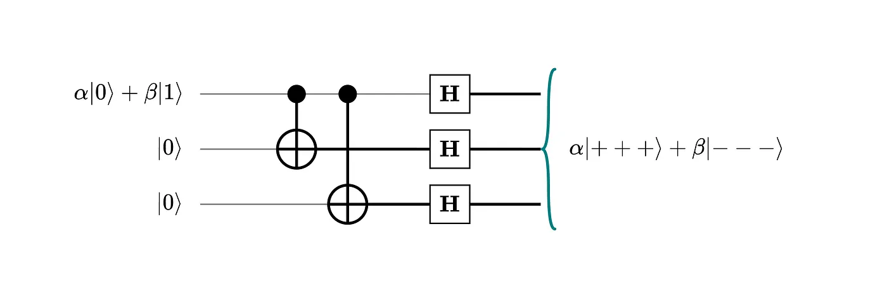
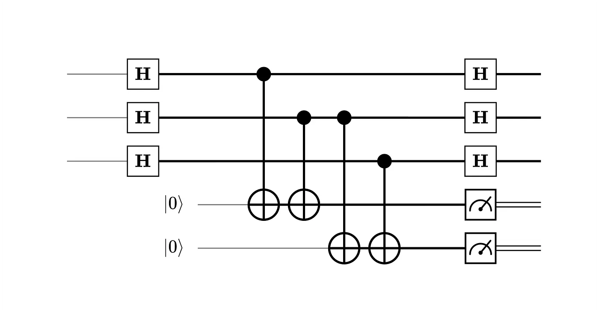
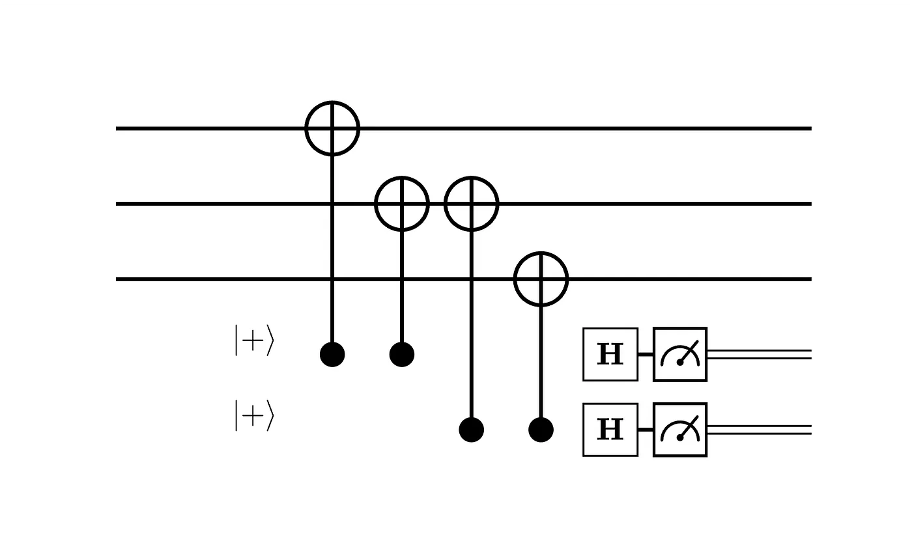
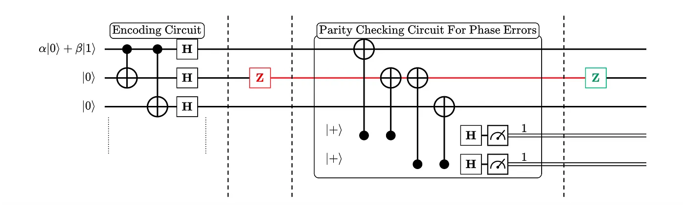

Detecting and Correcting Phase Errors
We have introduced the circuit used to detect bit flip errors. Next, let's see how we can detect phase errors.
Can We Use the Same Circuit?
Suppose that a qubit in the state \(\alpha|0\rangle + \beta|1\rangle\) has been encoded using three physical qubits, and a phase-flip error occurs on the middle qubit. This results in the state:
\[ (\mathbb{I} \otimes Z \otimes \mathbb{I})(\alpha|000\rangle + \beta|111\rangle) = \alpha|000\rangle - \beta|111\rangle \]After a phase-flip error on the middle qubit, the corrupted state remains a valid codeword — it still has components only along \(|000\rangle\) and \(|111\rangle\), placing it within the codespace. The syndrome measurement returns 00 every time, falsely indicating no error.
The syndrome outcome is the same regardless of which qubit the phase error occurred on. The bit-flip detection circuit has no way to distinguish a phase-corrupted state from the original state. We therefore need a different approach to catch phase-flip errors.
The Hadamard Transform
To understand how to detect phase errors, we first analyse how the Hadamard gate acts on the computational basis. Recall:
\begin{align} H|0\rangle &= \frac{|0\rangle + |1\rangle}{\sqrt{2}} = |+\rangle \\[4pt] H|1\rangle &= \frac{|0\rangle - |1\rangle}{\sqrt{2}} = |-\rangle \end{align}The Hadamard gate rotates the basis of the vector space from \(\{|0\rangle, |1\rangle\}\) to \(\{|+\rangle, |-\rangle\}\). To see why this is useful, recall how the \(X\) and \(Z\) gates act on the computational basis:
\begin{align} X(\alpha|0\rangle + \beta|1\rangle) &= \alpha|1\rangle + \beta|0\rangle \\[4pt] Z(\alpha|0\rangle + \beta|1\rangle) &= \alpha|0\rangle - \beta|1\rangle \end{align}Now consider how these gates act in the \(\{|+\rangle, |-\rangle\}\) basis instead:
\begin{align} X|+\rangle &= |+\rangle, \quad X|-\rangle = -|-\rangle \qquad \text{(acts like a phase flip)} \\[4pt] Z|+\rangle &= |-\rangle, \quad Z|-\rangle = |+\rangle \qquad \text{(acts like a bit flip)} \end{align}In the \(\{|+\rangle, |-\rangle\}\) basis, \(X\) acts as a phase flip and \(Z\) acts as a bit flip — exactly swapping the roles of the two error types.
The Hadamard transform exchanges bit-flip and phase-flip errors.
This is the key insight: if we work in the \(\{|+\rangle, |-\rangle\}\) basis, we can apply the exact same parity-checking methodology used for bit-flip errors to detect phase-flip errors instead.
Encoding Circuit for Phase Flip Errors
The encoding circuit for phase errors closely mirrors the one used for bit flip errors, again using three physical qubits to represent a single logical qubit:

This circuit produces the following logical encoding:
\[ |\psi\rangle = a|0\rangle + b|1\rangle \;\longrightarrow\; |\psi\rangle_L = a|{+}{+}{+}\rangle + b|{-}{-}{-}\rangle \]The logical qubit is now represented entirely in the \(\{|+\rangle, |-\rangle\}\) basis. With this encoding, any phase error acting on one of the three physical qubits behaves exactly like a bit flip error on that qubit — and we already know how to detect those.
Parity Checking Circuits for Phase-Flip Errors
After encoding the state into \(a|{+}{+}{+}\rangle + b|{-}{-}{-}\rangle\), we use the circuit below to detect phase-flip errors:

The first three Hadamard gates transform the state from the \(\{|+\rangle, |-\rangle\}\) basis into the \(\{|0\rangle, |1\rangle\}\) basis. We then apply the same parity checks as before to determine which qubit disagrees. The second layer of Hadamard gates transforms the state back into the \(\{|+\rangle, |-\rangle\}\) basis.
Note that we are assuming the phase errors occur after the encoding circuit and before the error detection circuit. The circuit above is equivalent to the simpler form below:

Putting It All Together
The entire circuit from encoding to phase error detection is shown below:

The syndrome measurement on the two ancilla qubits maps to the following error table:
| Syndrome \((M_0\, M_1)\) | Error | Qubit |
|---|---|---|
| 00 | No error | — |
| 10 | Phase flip \(Z\) | \(q_0\) |
| 11 | Phase flip \(Z\) | \(q_1\) |
| 01 | Phase flip \(Z\) | \(q_2\) |
Error syndromes for the 3-qubit phase-flip repetition code. \(M_0\) and \(M_1\) are the measurement outcomes of the ancilla qubits.
In the circuit, a phase error occurs on the second qubit, producing a syndrome of 11, indicating that we should apply a \(Z\) gate on the middle qubit to correct the error.
So far, we have seen how to independently correct bit-flip and phase-flip errors using parity-checking circuits. It is worth noting a key limitation: the bit-flip detection circuit is blind to phase errors, and the phase-flip detection circuit is also blind to bit errors.
In the next article, we will see how concatenating both circuits makes it possible to detect and correct both bit and phase flip errors simultaneously. You might ask why we are fixated on correcting only these two error types. It turns out that doing so allows us to correct any arbitrary single-qubit error — we will explore this in detail later.